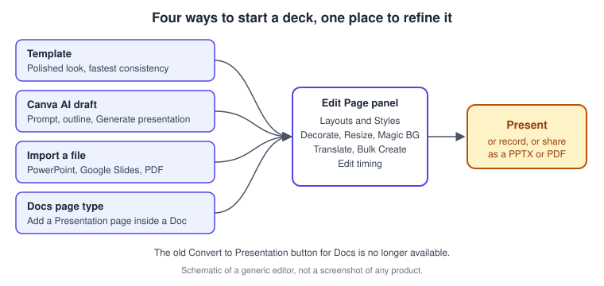
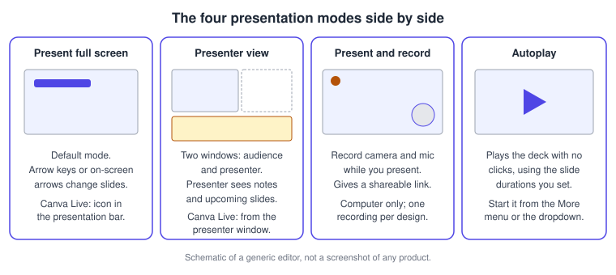
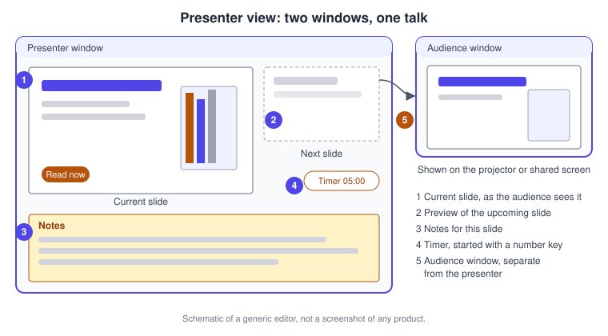
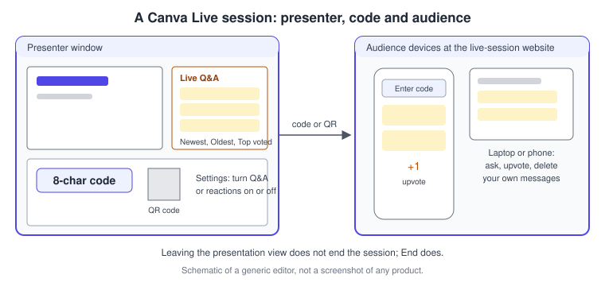
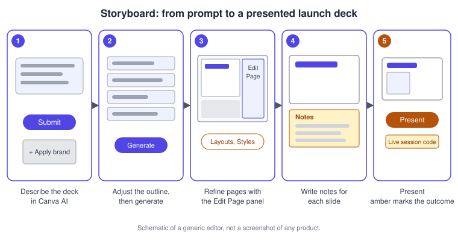

Presentations
|
This content was generated with the assistance of AI and should be verified against the official documentation before being relied on in production. |
This page was checked against the official Canva Help Center on 2026-11-07. Presentations are a design type of the Canva Visual Suite: the same editor that builds posts and documents, with slide-sized pages, presenter notes, page transitions and a set of delivery modes behind the Present button. Presenting, the four presentation modes, Canva Live and notes are described in the Help Center without naming a plan restriction, so they are available across Free, Pro, Business, Enterprise, Education and Nonprofits accounts. What depends on your subscription is the AI help: creating a presentation with Canva AI is a Premium-tier AI tool that counts toward the monthly AI usage allowance, and access depends on your account and language (see Plans, Pricing and AI Allowance). Prices are not repeated here; they are published at https://www.canva.com/pricing/. Everything on this page is generally available as documented in the Help Center. The conversational Canva AI 2.0 assistant that can also draft decks was launched as a research preview on 2026-04-16; no general-availability date is published, and its availability varies by account.
Several delivery features are computer-only. Canva Live and Present and record work only when you use Canva on a computer, and offline presenting works on the device where you enabled it, in a desktop browser or a mobile browser but not in the Canva mobile app.
The running example is Bookshelf, the book catalogue and reading-list app designed in the Figma sub-section. This page builds its launch presentation for a book-club meetup: a draft from a prompt, a refined brand-styled deck, presenter notes, a rehearsal, a live session with a question-and-answer panel and a recorded version for people who could not attend.
Four ways to start a deck
You can begin a presentation from a template, from existing content, from a Canva AI prompt or by turning a Doc into slides. Whichever route you choose, you finish in the same editor and refine pages the same way.

| Route | What it gives you | Good for |
|---|---|---|
Template |
A professionally designed deck that you fill with your content |
Polished visuals and a consistent look with the least effort |
Canva AI draft |
A generated deck from a prompt, an outline you can edit first, and optional web research |
Overcoming a blank page; quick first drafts |
Imported file |
An editable Canva design converted from a PowerPoint or Google Slides file |
Updating an existing deck |
Presentation page in a Doc |
A slide added as a page type inside a Canva Doc |
Turning Doc content into slides |
Source: Canva Help Center: Presentation modes (the article’s "Create and refine presentations with Canva AI and Page tools" section)
Drafting with Canva AI
Canva AI is reachable from the homepage side navigation and, inside the editor, from the Canva AI entry in the side panel on desktop or the bottom menu on mobile. In the homepage chat you choose Presentation or describe the deck. The plus icon offers Upload (a file from your device), Add from Canva (an existing design or upload), Apply brand (a Brand Kit) and Connect (third-party apps to import files from), and there is a microphone for a spoken prompt. Canva AI may propose an outline, which you can adjust before you select Generate presentation; you then open the result in the editor or enter another prompt for a different result. Web Research can bring in current information on the topic.
Two further routes exist. Edit with AI appears on a template card in the Templates tab, on a Brand Template in the Brand tab and on a private design in Projects, and it restyles your content from a prompt; it works with presentations, social media posts and print designs only. Generating from data starts at the homepage Canva AI chat with a CSV file, a Sheet from your account or a connected source, and produces a deck with charts, headlines and a summary-to-takeaways story. The Help Center lists 15 chart types the AI can choose from and 20 supported languages for this feature, and notes that a new prompt does not change charts that already exist: edit those manually. Outlines are available only when you generate from the homepage; from the Templates tab you may see fewer options.
Canva AI for Presentations can be switched on or off for a team by an admin, teacher or brand designer, and, depending on the language set in Canva, some members may not have access even when it is enabled.
Docs to Decks is gone
Older guides describe a Convert to Presentation (Docs to Decks) button in Canva Docs. The Help Center now states that the feature is no longer available and that there are no confirmed plans for it to return. The supported replacements are to add a Presentation page type to the Doc through the page thumbnails (Visual Suite 2.0), to copy and paste the Doc content into a new presentation, or to start from a presentation template and add the content by hand. See Docs for the Doc side.
Refining pages with the Edit Page panel
The Edit Page panel is where a deck is polished one whole page at a time. Select the page background or its thumbnail and choose Edit on the floating toolbar. The panel brings together:
-
Layouts, which rearrange the page for the content it holds
-
Styles, which apply colour and font combinations across your slides
-
page tools: Decorate (styled elements that match the design), Resize, Magic BG (create or refresh a background), Translate and Bulk Create (generate several slides from a data source)
-
Edit timing, a clock button for the slide duration
If you cannot find Layouts or Styles, remember that they live in the Edit Page panel, which only appears while a page is selected; they are no longer under the Design or Templates tabs. Related pages cover templates, layouts and Magic Design, Resize, Bulk Create and Translate and animation and transitions.
Slide duration, timing and transitions
Slide duration decides how long a page stays visible during playback, preview or Autoplay. It is separate from element timing, which controls when individual text, images or videos appear or disappear on that page. To set it, select the page, choose the clock (Edit timing), then use the slider or type a number of seconds. The Apply to all pages switch gives every slide the same duration and replaces custom durations you set earlier, so use it before you tweak individual slides. In presentation designs, on-click animations can also decide when elements appear.
Page transitions are added from the page thumbnails: show the thumbnails with the Pages button, hover between two pages (or over a thumbnail and choose More) and select Add transition. Hovering previews a transition, the duration runs from 0.1 to 2.5 seconds, and direction options depend on the style. Transitions are available in every design type except Docs. Click the icon between two pages to change the transition later.
Presenter notes
Notes sit in the bar at the bottom of the editor. They appear in Presenter view and during Present and record, and you can type them yourself or select Generate notes, optionally with a Custom prompt; if notes already exist, clear them first or use the custom prompt. To keep a script on paper, download the design as a PDF and switch on Include notes under Advanced Settings in the Download panel.
The four presentation modes
Select Present in the top menu (if you do not see it, select Share first and look for it there) and use the dropdown beside it to choose a mode. Press Esc to leave, or use the exit-full-screen control at the bottom corner.

| Mode | What happens | Notes |
|---|---|---|
Present full screen |
The default. Arrow keys or the on-screen arrows change slides. |
Canva Live starts from the icon in the presentation bar. |
Presenter view |
Opens two windows: the audience window shows the design, and the presenter window shows notes and the upcoming slides. |
Canva Live questions appear only in the presenter window. |
Present and record |
Records you while you present and gives a shareable link. |
Computer only; see talking presentations below. |
Autoplay |
Plays the deck without navigation, using slide durations. |
On a phone, start it from the More menu. |
The Help Center explains that the placement of the Presenter and Audience windows was changed to fix slides, embeds and images not showing; to hide your browser bookmarks while presenting, press Command + Shift + B on a Mac or Ctrl + Shift + B on Windows.

Tools while presenting
| Tool | How it works |
|---|---|
Go to page |
The Go to page button at the bottom left lets you type a slide number. Shortcut: Option + Command + G on a Mac, Alt + Ctrl + G on Windows. |
Draw on page |
In full screen or Presenter view, choose Draw on page, then Pen, Marker or Highlighter, a colour and the Eraser. The strokes are temporary and are not saved when you leave presentation mode. |
Live edits |
Edits made in the editor appear in the running presentation, which refreshes while staying on the slide you were on. Select More, then Hide live edits to switch this off. |
Magic Shortcuts |
On a computer, press B to blur the slide, C for confetti, D for a drumroll, M for a mic drop, O for bubbles, Q for quiet and U for a curtain call. Shift + / or ? opens the menu, and the Magic Cursor can be hidden or shown from More. |
Timer |
Press a number key from 1 to 9 to start a timer of that many minutes; pressing another number resets it. Options include music (Focus, Dramatic, Upbeat, Energetic or Lofi). Everyone on the design sees the timer. |
Remote Control |
Select More, then Share remote control, and give other presenters the QR code or link so that several people can change slides in real time. Pause or resume their control from the same menu. Signed-in presenters with permission to view the design also see presenter notes. |
Set a remote session up before the talk begins so other presenters have time to connect. The Help Center notes the Magic Shortcuts and music are for computers.
Canva Live
Canva Live adds an interactive layer: the audience joins from their own device, asks questions and upvotes the ones they care about. It is available only on a computer. You start it from the presentation view, and the audience joins at canva.live (live.canva.cn from China) with an 8-character alphanumeric code or by scanning a QR code.

Moderator controls are behind Settings at the upper right: toggles enable or disable Q&A and reactions, and the Live Q&A panel can be sorted by Newest, Oldest or Top voted. Leaving the presentation view does not end the session, which lets you show the audience something in another tab; select Present again to return. Audience members can delete their own messages, upvote and take a vote back by selecting the thumbs-up again, hide or show the invitation banner through the Hide/Show toggle in the Canva Live controls, and leave through More and Leave session.
Talking presentations
Present and record turns a deck and your voice into a shareable recording. It works on a computer only and is temporarily unavailable in India. Only one recording per design is supported. A Public view link is created automatically when you record, even when you do not save the recording, so delete that link if you do not want to share; deleting the link does not delete a saved recording. Recordings also appear in Uploads, under Videos or, for audio only, under Audio. Direct sharing to YouTube or other social media, embedding the recording in another Canva design, exporting long recordings and playing videos while recording are not supported: download the video and upload it where you need it.
If instead you want a clip of yourself inside a slide, use Record yourself from the Uploads tab, which adds an editable video element. See Video Editor, Audio and Captions.
Presenting offline
Make a presentation available offline before you lose the connection, on the device where you will present. Offline you can present slides, use Presenter view and speaker notes, and use Magic Shortcuts and the timer (the timer music does not play). Embedded content such as YouTube videos, Spotify links and other Canva designs shows as a placeholder until you reconnect. Enterprise, Canva for Districts and Canva for Campus administrators can limit who may use offline designs through Settings and the Permissions tab; the default is Everyone. Offline editing is a separate feature, covered on Desktop, Mobile and Offline.
PowerPoint, Google Slides and PPTX
Importing a PowerPoint file is a beta feature available on canva.com in a desktop browser. It supports .pptx and .ppt, files up to 100 MB for .ppt and 300 MB for .pptx, .potx and .ppsm, up to 300 slides and up to 1,400 elements and images per file. Charts, SmartArt, 3D objects and WordArt are not supported and are ignored, a scanned deck can only become flat images, and fonts are matched where possible, so expect to check the result. Google Slides files come in through Projects, Add new, Import and a connected Google Drive, where the presentation appears as a document to upload.
In the other direction, PPTX is a download format for presentations only, and a design downloaded as PPTX may look different when opened in PowerPoint. Download as PDF with notes when you need a script. See Downloading and File Formats.
Procedures on the Bookshelf launch deck

Procedure 1: Draft the Bookshelf launch deck with Canva AI
-
On the Canva homepage select Canva AI in the side navigation.
-
Select Presentation, or type a prompt such as "A 10-slide book-club meetup deck introducing Bookshelf, a reading-list app: problem, three features, a demo flow, roadmap and a call to join the beta".
-
Select the plus icon, choose Apply brand and pick the Bookshelf Brand Kit (see Brand Kit and Brand Voice).
-
Optionally attach a briefing document with Upload, or switch on Web Research for current facts.
-
Press Enter or select Submit.
-
Review the proposed outline: reorder, rename or delete items until it matches the talk.
-
Select Generate presentation, then open the design in the editor.
Procedure 2: Refine the deck page by page
-
Select the title slide’s background, then choose Edit on the floating toolbar to open the Edit Page panel.
-
Try a different layout under Layouts and a colour and font pairing under Styles until the page matches the Bookshelf identity.
-
Use Decorate to add matching elements and Magic BG to refresh a background, then repeat on the feature slides.
-
Select the clock (Edit timing) and set the slide duration; switch on Apply to all pages only if every slide should be the same length.
-
Show the page thumbnails, hover between slides and choose Add transition, keeping the duration short.
Procedure 3: Add presenter notes
-
Open Notes at the bottom of the editor on the first slide.
-
Select Generate notes, or choose Custom prompt, type "Two friendly sentences, then one question for the audience", and press Enter.
-
Read each note aloud and edit it into your own words.
-
To print the script, select Share, then Download, choose PDF, open Advanced Settings, switch on Include notes and download.
Procedure 4: Rehearse in Presenter view
-
Select Present, open the dropdown beside it and choose Presenter view, then confirm.
-
Drag the audience window to the projector or shared screen and keep the presenter window on your laptop.
-
Press 5 for a five-minute timer, then step through the slides while reading the notes and the upcoming slide.
-
Use Go to page (Option + Command + G on a Mac, Alt + Ctrl + G on Windows) to jump to the demo slide.
-
Leave with Esc, correct any slide in the editor, and run the part again.
Procedure 5: Run a Canva Live Q&A at the meetup
-
Open the deck on a computer and start Present in full screen or Presenter view.
-
Select the Canva Live icon (in the presentation bar, or in the Presenter window).
-
Select Start new session and show the 8-character code and QR code on screen.
-
Ask the room to open canva.live and enter the code.
-
Open Settings and keep Q&A on; switch reactions off if you want a quieter room.
-
Sort the panel by Top voted and answer the best questions at the end.
-
Select End in presentation mode when the meetup finishes.
Procedure 6: Record a version for members who could not attend
-
On a computer, select Present, then Present and record from the dropdown, and choose Next.
-
Select Go to recording studio and allow Canva to use your microphone and camera, choosing the devices if you have several.
-
Select Start recording and present the deck as you would to an audience.
-
Select End recording and wait for the upload.
-
Choose Copy link to share it, Download for a file, Discard to delete it or Save and exit to return to the editor.
-
If you do not want the Public view link to stay active, delete it from the Share menu.
Procedure 7: Prepare for a venue without Wi-Fi
-
Open the deck in a desktop browser, select the cloud icon and choose Make available offline, then wait for setup to finish.
-
Replace embedded videos you depend on with exported clips, because embedded content does not play offline.
-
At the venue, turn off the connection, go to Projects, select Available offline, open the deck and select Present.
Common mistakes
-
Looking for Layouts and Styles in the Design tab; they are in the Edit Page panel and only appear when a page is selected.
-
Expecting the Convert to Presentation button in Docs; add a Presentation page or paste the content instead.
-
Pressing a number key during a talk by accident and starting a timer; the number keys 1 to 9 open it.
-
Assuming leaving full screen ends a Canva Live session; select End.
-
Presenting from the Canva mobile app offline; offline presenting needs a mobile browser or a desktop browser.
-
Counting on every PowerPoint feature surviving import; charts, SmartArt, 3D objects and WordArt are dropped.
Where older guides are outdated
| Older statement | Current state (checked 2026-11-07) |
|---|---|
Docs can be converted into a deck with one button |
Convert to Presentation (Docs to Decks) is no longer available; add a Presentation page, paste, or start from a template. |
A presentation is Present, Presenter view, Present and record and Autoplay |
Those modes remain; Remote Control, Draw on page, Magic Shortcuts, the timer with music, live edits and offline presenting add to them. |
AI help is a Magic Studio tool among others |
Decks are drafted in Canva AI chat, with outline editing, Web Research, brand application and data-driven decks; Canva AI 2.0 launched as a research preview on 2026-04-16. |
Styles and layouts are in the Design tab |
They are in the Edit Page panel with the page tools. |
PowerPoint files import without limits |
Import is a beta with file-size, slide and element limits and unsupported object types. |
Recent changes
-
2026-04-16: Canva AI 2.0 launched as a research preview; the Help Center documents Canva AI for Presentations without a preview label.
-
Convert to Presentation was removed from Canva Docs; the Help Center says no return is confirmed.
-
Remote Control gained presenter notes for signed-in presenters with permission to view the design.